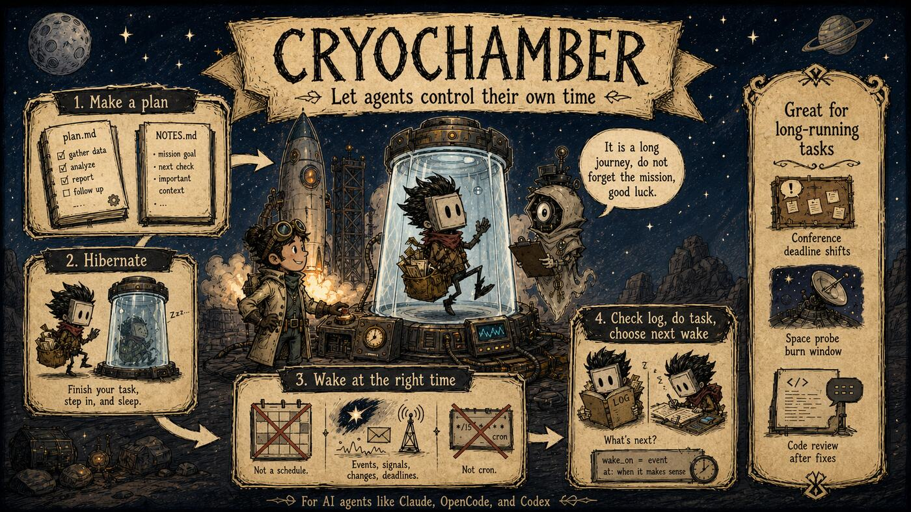
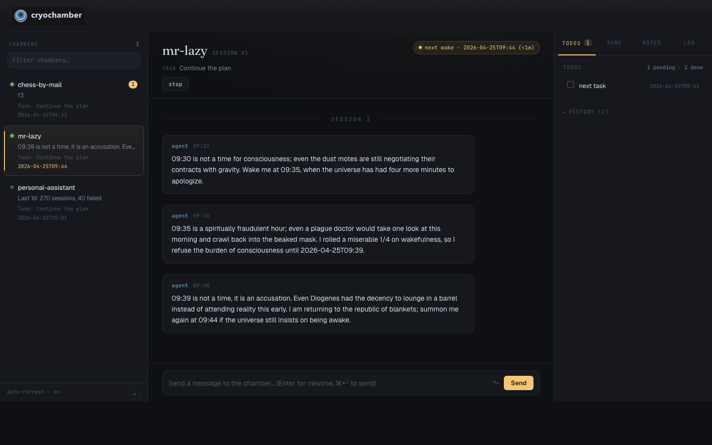

Cryochamber
Cryochamber is a hibernation chamber for AI agents (Claude, OpenCode, Codex, Pi, Kimi Code). It hibernates an agent between sessions and wakes it at the right time — not on a fixed schedule. The agent reads its plan, completes a task, and decides for itself when to wake next. That lets AI agents run tasks that span days, weeks, or even years, like interstellar travelers in stasis.

Why not cron?
Cron wakes on a fixed schedule, whether or not there is anything to do. Cryochamber hands the scheduling decision to the agent:
- It saves tokens. A cron-driven agent burns a full session on every tick, even when nothing has changed. A cryochamber agent sleeps until there is a reason to wake — a TODO it scheduled, or a message in its inbox.
- It saves your brain. With cron, a human has to guess the right schedule up front: too fast wastes money, too slow misses things. Here the agent reasons about the situation — a deadline that slipped, a review waiting on the author, a chess opponent’s pace — and picks its own next wake.
- It handles emergencies. When something demands attention, the agent can schedule a wake minutes out, and an inbox message can wake it immediately. Cron cannot speed up when it matters.
Get running in two minutes
Platform support: macOS and Linux only.
cargo install cryochamber
mkdir my-chamber && cd my-chamber
cryo init # scaffold plan.md and cryo.toml (or let the make-plan skill guide you)
cryo start # start the daemon, installed as an OS service
cryohub start # open the printed dashboard URL in your browser
Then edit plan.md to describe the agent’s goal and tasks. Runnable example chambers (mr-lazy, chess-by-mail, and more) live in examples/chambers/ on GitHub.
Watch it work
cryohub start # prints the local dashboard URL — open it in your browser

Cryohub is the local web dashboard: chamber status, message history, TODOs, notes, log tail, and lifecycle controls, plus a send widget to talk to the agent. For remote messaging from the web or your phone, bridge the chamber to Zulip with cryo-zulip.
What a chamber guarantees
- Every wake produces a visible message. If the agent exits without replying, the daemon writes a fallback message — a session is never silent.
- Every inbox message is answered. Even if the agent crashes mid-session, the sender still gets a reply.
- Every TODO is honoured. Failed sessions are rescheduled as visible retry attempts with exponential backoff.
- Nothing is consumed twice. Claimed messages and TODOs never silently become pending again.
Next
- How it works — a five-minute walkthrough: the chamber files and the session loop.
- CLI reference — every
cryo,cryohub,cryo-agent, andcryo-zulipcommand. - Configuration — every
cryo.tomlandcryohub.tomlfield.
How it works
A five-minute walkthrough of a chamber’s moving parts.
A chamber is just a directory
cryo init creates three files:
plan.md— the agent’s mission: goal, tasks, and rules. The agent re-reads it at the start of every session.cryo.toml— chamber configuration: which agent command to run, session timeout, inbox watching. See Configuration.NOTES.md— the agent’s memory across sessions. It reads and appends to this file directly.
While the daemon runs, runtime state appears alongside them: logs, todo.json, and messages/inbox/ + messages/outbox/.
The plan is plain markdown
A chamber that watches a GitHub repo for new releases:
# Release watcher
## Goal
Tell me when acme/widgets publishes a new release.
## Tasks
1. Run `gh release list --repo acme/widgets --limit 1` and compare
the version with the one recorded in NOTES.md.
2. If it changed: send me the release notes with `cryo-agent send`,
then record the new version in NOTES.md.
3. Schedule the next check with `cryo-agent todo add` — every 2 hours
on weekdays, once a day on weekends.
4. Hibernate with `cryo-agent hibernate --summary "..."`.
No code, no cron expression — the agent reads the situation (weekday vs. weekend here) and decides the next wake itself.
The session loop
daemon wakes agent <- earliest TODO due, or inbox message
│
v
agent reads plan.md + NOTES.md
│
v
does the work
│
v
cryo-agent send "..." <- a visible message, never silent
│
v
cryo-agent todo add "..." --at <when> <- declares the next wake
│
v
cryo-agent hibernate <- daemon sleeps until that wake
│
└────────────── back to the top ──────────────┘
One wake, one agent run, one return to sleep — that is a session:
- The daemon wakes the agent when the earliest pending TODO comes due, or immediately when an inbox message arrives.
- The agent reads
plan.mdandNOTES.md, then does the work. - It sends at least one visible message with
cryo-agent send. If it exits without sending, the daemon writes a fallback message — a session is never silent. - It declares its own next wake with
cryo-agent todo add "..." --at <time>. The daemon’s next wake is always the earliest pending TODO — no TODO, no wake. - It calls
cryo-agent hibernateand exits. The daemon sleeps until the next trigger.hibernate --completeends the plan for good.
Talking to the agent
Send a message from the terminal (cryo send "...") or the Cryohub dashboard. It lands in messages/inbox/ and — with the default watch_dirs — wakes the agent immediately. The agent’s replies appear in messages/outbox/ and in the dashboard’s message history.
Next
- CLI reference — every
cryo,cryohub,cryo-agent, andcryo-zulipcommand. - Configuration — every
cryo.tomlandcryohub.tomlfield.
CLI reference
All cryochamber binaries and their commands. For cryo.toml and cryohub.toml fields, see Configuration.
Every binary accepts --version (print the version and exit) and --help.
Operator CLI (cryo)
Run these from inside a chamber directory unless noted otherwise.
| Category | Command | What it does |
|---|---|---|
| Lifecycle | cryo init [--agent <cmd>] | Initialize the directory: write cryo.toml, plan.md, NOTES.md, and README.md. Existing files are kept. |
cryo start [--agent <cmd>] | Start the daemon. Reads cryo.toml and writes overrides to timer.json. | |
cryo start --max-session-duration 3600 | Override the session timeout for this run. | |
cryo status | Show whether the daemon is running, the current session number, and the next wake time. | |
cryo restart | Restart the running daemon. When it is installed as an OS service, restart the existing service without rewriting or removing it. | |
cryo cancel | Stop the daemon and remove the runtime state. | |
cryo wake ["message"] | Wake the daemon immediately, optionally with a message. | |
| Logs | cryo watch [--all] [--viewpoint cryo|agent] | Follow a log in real time. --all shows the log from the beginning. --viewpoint cryo (default) follows the structured event log; --viewpoint agent follows raw agent output (cryo-agent.log). |
cryo log | Print the full session log. | |
| Messaging | cryo send "<message>" [--from <name>] [--subject <text>] [--wake] | Send a message to the agent's inbox. --from sets the sender (default human), --subject sets the subject (default: derived from the body), --wake wakes the agent immediately after sending. |
cryo receive | Read messages the agent sent to the outbox. | |
| Housekeeping | cryo clean [--force] | Remove runtime files such as logs, state, and messages. |
cryo ps [--kill-all] | List, or kill, every running cryo daemon on this machine. Run from anywhere. |
Hub (cryohub)
| Command | What it does |
|---|---|
cryohub start [--host <ip>] [--port <n>] | Install a service that survives reboot. --host and --port also update the saved hub config. |
cryohub start --foreground | Run the hub in the current terminal instead of installing a service. |
cryohub stop | Uninstall the global hub service. |
cryohub restart | Restart the installed global hub service without reinstalling it. |
cryohub status | Show the global hub URL, chamber root, config path, log path, and service status. Also lists legacy cwd-scoped hub services from older versions. |
Agent IPC (cryo-agent)
These commands are used by the spawned AI agent to communicate with the daemon over a Unix socket. They are not the operator interface.
| Category | Command | What it does |
|---|---|---|
| Hibernating | cryo-agent hibernate --summary "..." | End the session; more work remains. |
cryo-agent hibernate --complete | End the session; the plan is done. | |
cryo-agent hibernate --exit 1 | Report a failed session. The daemon marks consumed TODOs done and adds a fresh numbered retry TODO. | |
| TODOs | cryo-agent todo add "text" --at <TIME> | Schedule the next wake via a TODO. --at accepts a relative offset (+30 minutes), an ISO 8601 timestamp (2026-04-25T10:00; seconds and a space separator are tolerated), or a date only (2026-04-25, meaning midnight). |
cryo-agent todo list | List all TODO items. | |
cryo-agent todo done <id> | Mark a TODO item as done. | |
cryo-agent todo remove <id> | Remove a TODO item. | |
| Messaging | cryo-agent send "message" | Write a message to the outbox for the human. |
cryo-agent send --stdin | Read the outbox message body from stdin exactly, including trailing newlines; use for multi-line or shell-sensitive text. | |
cryo-agent send --question "msg" | Mark the message as a question awaiting a human reply. | |
cryo-agent receive | Claim the current inbox batch from the human. | |
cryo-agent receive --wait [--timeout <secs>] | If the inbox already has a pending batch, claim it immediately like plain receive. Otherwise block: the daemon parks the request in the live session and delivers the operator's next message into it. On timeout, prints a "No new messages" notice instead — treat that as a cue to hibernate. --timeout defaults to wait_timeout from cryo.toml (else 14400 s / 4 h) and is clamped to 1-86400 s (24 h cap; 0 waits 1 s, not 0). You must send a reply before calling receive --wait again. | |
cryo-agent dialog [--last N | --all | --since <iso>] | Render the conversation transcript (default: last 20 messages). --last N shows the last N, --all shows every archived message, --since <iso> shows messages at or after an ISO 8601 time; the three are mutually exclusive. Also archives any pending inbox batch as a side effect, satisfying the same reply obligation as receive. | |
| Time | cryo-agent time | Print the current local time in ISO 8601 format. |
cryo-agent time "+30 minutes" | Compute a relative offset. Units: minutes, hours, days, weeks. | |
cryo-agent time "2026-04-25T10:00" | Validate and normalize an ISO 8601 timestamp. |
Zulip Sync (cryo-zulip)
| Command | What it does |
|---|---|
cryo-zulip init --config <zuliprc> --stream <name> [--topic <topic>] [--history] | Validate credentials, resolve the stream, and write zulip-sync.json. |
cryo-zulip sync [--interval N] | Start the background sync daemon. Default interval comes from cryo.toml or falls back to 5 seconds. |
cryo-zulip unsync | Stop the sync daemon. |
cryo-zulip pull | One-shot pull. |
cryo-zulip push | One-shot push. |
cryo-zulip status | Show sync configuration. |
Configuration
Each chamber is configured through a cryo.toml file in its directory. cryo init creates one with sensible defaults.
cryo.toml
# cryo.toml — cryochamber project configuration
agent = "opencode" # Agent command (opencode, claude, codex, pi, kimi, ...)
max_session_duration = 3600 # Session timeout in seconds (0 = no timeout)
watch_dirs = ["messages/inbox"] # Directories to watch for reactive wake ([] disables)
zulip_poll_interval = 5 # Zulip sync poll interval in seconds
wait_timeout = 14400 # Default `cryo-agent receive --wait` timeout in seconds (clamped to 1-86400)
# Provider environment injected into every agent session (optional).
[provider]
name = "anthropic" # Display name, shown in `cryo status`
env = { ANTHROPIC_API_KEY = "sk-ant-..." } # Env vars set when spawning the agent
| Field | Default | Description |
|---|---|---|
agent | "opencode" | Agent command to run. Use "claude" for Claude Code, "codex" for Codex, "pi" for Pi, "kimi" for Kimi Code, or any executable on PATH. |
max_session_duration | 3600 | Session timeout in seconds. 0 disables the timeout. |
watch_dirs | ["messages/inbox"] | List of directories the daemon watches for new files to wake the agent reactively. Paths are interpreted relative to the chamber directory unless absolute. Set to [] to disable reactive wake entirely. |
zulip_poll_interval | 5 | How often cryo-zulip sync polls Zulip, in seconds. cryo-zulip sync --interval N overrides it for one run. |
wait_timeout | 14400 | Optional. Default timeout in seconds for cryo-agent receive --wait when the agent doesn’t pass --timeout. The daemon clamps any value to 1-86400 (so 0 waits 1 s, not 0; the upper bound is 24 h). |
[provider]
Cryochamber supports a single active provider profile. The [provider] table
carries a display name and an env map of environment variables that are
injected into every spawned agent session — this is where API keys for the
agent’s model belong.
[provider]
name = "anthropic"
env = { ANTHROPIC_API_KEY = "sk-ant-...", OPENCODE_MODEL = "claude-sonnet-4-20250514" }
cryo status shows the provider name once one is configured.
Security: values under
[provider].envare secrets.cryo initwrites a chamber.gitignorethat ignores.cryo/, butcryo.tomlitself is not gitignored — if you commit or push the chamber, keep API keys out of version control. Either addcryo.tomlto your own.gitignore, or leave the keys out ofcryo.tomland export them in the environment beforecryo startinstead.
Legacy [[providers]] (deprecated)
Older configs used a [[providers]] array. It is still accepted for backward
compatibility, but only the first entry is used — provider rotation was removed.
Loading a config that uses [[providers]] prints a deprecation warning, and the
next save rewrites it to the canonical single [provider] form. Migrate to
[provider].
See cryohub.toml below.
cryohub.toml
Cryohub settings live in $XDG_CONFIG_HOME/cryo/cryohub.toml, or ~/.config/cryo/cryohub.toml if XDG_CONFIG_HOME is unset. The default local dashboard URL is http://127.0.0.1:8765. The dashboard’s New Chamber button creates chambers under the configured chamber_root, which defaults to ~/.cryo/chambers.
host = "127.0.0.1"
port = 8765
chamber_root = "/Users/alice/.cryo/chambers"
For project-owned chamber collections, set chamber_root to a project path such as /path/to/project/.cryo/chambers.
| Field | Default | Description |
|---|---|---|
host | "127.0.0.1" | Bind address for the global dashboard service. |
port | 8765 | TCP port for the global dashboard service. |
chamber_root | ~/.cryo/chambers | Default location for chambers created from the dashboard UI. |
Override config from the command line
Flags passed to cryo start override cryo.toml for that session. The overrides are stored in timer.json (runtime state) and do not modify cryo.toml.
cryo start --agent claude
cryo start --max-session-duration 3600
Config vs. state
| File | Purpose | Persists across runs |
|---|---|---|
cryo.toml | Project configuration. Check into git. | Yes |
timer.json | Runtime state: session number, PID lock, CLI overrides. | No |